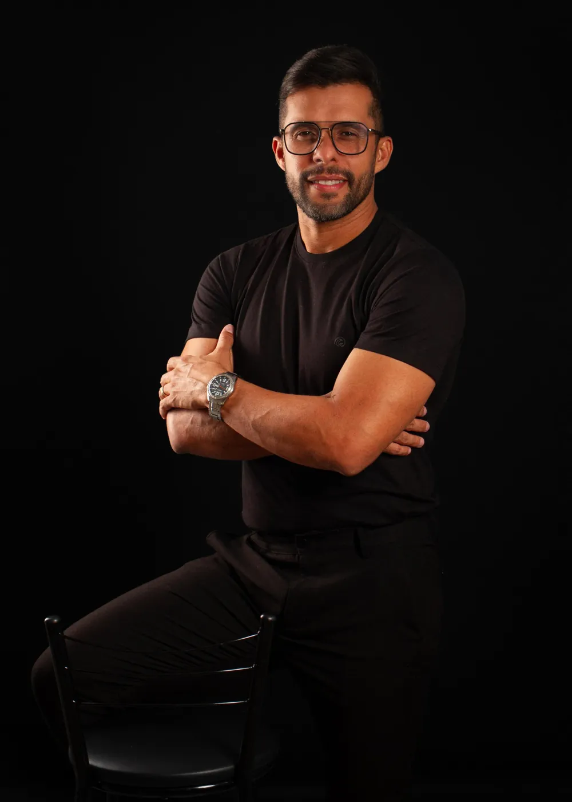

01
Dia 1O Ciclo
Problema trabalhado
Repetição de comportamentos e padrões.
Comece identificando situações, pensamentos e comportamentos que parecem levar você de volta ao mesmo lugar.
Uma aula por dia, durante 7 dias. O método prático que Francisco Fernandes organizou a partir da própria história, para você entender os padrões de pensamento e comportamento que mantêm você preso na ansiedade e no desânimo e começar a construir uma nova rotina.
R$ 9,90pagamento único · cerca de R$ 1,41 por aula
Quero começar por R$ 9,90Acesso após a confirmação do pagamento • 7 dias de garantia • Compra segura
Você não precisa resolver tudo hoje. Pode começar tentando entender o que está acontecendo.

Talvez você se reconheça
Você promete que dessa vez será diferente.
Decide que vai mudar seus hábitos, cuidar mais de si e começar uma nova fase.
Nos primeiros dias, até consegue dar alguns passos.
Mas, aos poucos, a rotina pesa. Os pensamentos voltam. O desânimo aparece. Você deixa algumas coisas para depois e começa a se cobrar novamente.
Quando percebe, está no mesmo lugar.
E talvez o mais difícil não seja apenas isso acontecer. Talvez seja começar a acreditar que você nunca vai conseguir mudar.
Mas repetir um padrão não significa que você está condenado a repeti-lo para sempre.
Se você se identificou com alguma dessas situações, talvez valha a pena parar por alguns minutos e olhar para esse padrão com mais atenção. Reconhecer um padrão já é um primeiro passo. As 7 aulas foram feitas para ajudar você a dar os próximos.
Como o ciclo funciona
Às vezes, uma experiência desperta um pensamento. Esse pensamento influencia o que sentimos. O sentimento pode afetar nossas escolhas e comportamentos. E as consequências podem reforçar os mesmos pensamentos.
Assim, um padrão pode se repetir.
e o padrão volta ao começo
O primeiro passo não é se culpar por estar nesse ciclo. É começar a reconhecê-lo.
Este modelo é uma ferramenta educativa de reflexão sobre padrões de comportamento. Não é uma explicação para ansiedade, depressão ou outras condições de saúde.
A jornada de 7 dias
Cada dia traz uma aula curta e prática, com um ponto de reflexão para ajudar você a reconhecer padrões, compreender dificuldades e identificar pequenas ações possíveis.
Problema trabalhado
Repetição de comportamentos e padrões.
Comece identificando situações, pensamentos e comportamentos que parecem levar você de volta ao mesmo lugar.
Problema trabalhado
Experiências que continuam influenciando o presente.
Reflita sobre acontecimentos e aprendizados anteriores que podem estar influenciando suas escolhas, sem precisar reviver experiências difíceis além dos seus limites.
Problema trabalhado
Excesso de pensamentos e sobrecarga emocional.
Aprenda a observar pensamentos recorrentes e identificar situações em que eles aumentam a sensação de sobrecarga.
Problema trabalhado
Dificuldade de começar e manter pequenas ações.
Observe como a inatividade, o adiamento e o isolamento podem fazer parte de determinados ciclos. Identifique passos pequenos e realistas para retomar atividades possíveis.
Problema trabalhado
Começar, interromper e abandonar mudanças.
Reconheça situações em que seus hábitos, expectativas ou dificuldades práticas podem atrapalhar a continuidade dos seus objetivos.
Problema trabalhado
Rotina sem clareza de prioridades.
Reflita sobre o que é importante para você e identifique objetivos pequenos, concretos e possíveis de colocar em prática.
Problema trabalhado
Continuidade após a jornada inicial.
Organize um plano simples de continuidade, com pequenas ações, acompanhamento pessoal e espaço para recomeçar quando necessário.
Os 7 dias completos por R$ 9,90
Como as aulas funcionam
Consumir mais conteúdo não significa, necessariamente, mudar a maneira como vivemos.
Por isso, a proposta das sete aulas é transformar cada tema em uma oportunidade de observação e aplicação prática.
O objetivo não é mudar tudo de uma vez. É começar com um passo possível e construir continuidade ao longo do tempo.
A história do autor
Eu também vivi momentos muito difíceis.
Enfrentei períodos de ansiedade intensa, depressão, desânimo e sofrimento emocional. Houve um momento em que minha dor chegou a um nível tão profundo que quase tirei a própria vida.
Não conto isso para despertar pena. Conto porque sei que, por trás de muitas pessoas que continuam trabalhando, sorrindo e cuidando dos outros, pode existir uma luta que quase ninguém conhece.
Na minha trajetória, recebi ajuda de um amigo que me mostrou outras formas de lidar com o que eu estava vivendo.
Comecei a aprender, passo a passo, a observar meus padrões, desenvolver novas atitudes e construir uma rotina diferente.
Em cerca de sete dias, percebi que minhas crises de ansiedade começaram a diminuir.Esse foi um marco pessoal da minha experiência, não uma promessa de que o mesmo acontecerá com todas as pessoas.
Foi dessa vivência que nasceu a vontade de organizar aquilo que aprendi em uma jornada acessível de sete aulas.
Não quero prometer que sua vida mudará da noite para o dia. Quero oferecer um ponto de partida para você começar a olhar para seus padrões e dar pequenos passos possíveis.
Para quem é
Comece hoje
Por menos do que o preço de um lanche, você tem acesso à jornada completa de 7 dias e pode começar a primeira aula ainda hoje.
R$9,90
cerca de R$ 1,41 por aula
Quero começar por R$ 9,90Pagamento processado com segurança pela Cakto. Acesso liberado após a confirmação.
Pelo Código de Defesa do Consumidor (art. 49), compras feitas pela internet podem ser canceladas em até 7 dias. Se as aulas não fizerem sentido para você, basta pedir o reembolso dentro desse prazo e o valor é devolvido integralmente.
Perguntas frequentes
Não. A proposta é apresentar os temas de maneira simples e acessível, para que você possa acompanhar a jornada no seu próprio ritmo.
Não. A proposta é seguir uma aula por vez, reservar momentos para refletir e colocar em prática as atividades que fizerem parte do conteúdo.
Cada pessoa tem uma história e uma realidade diferentes. Não é possível garantir um prazo ou um resultado específico. As sete aulas oferecem um caminho educativo de reflexão e desenvolvimento pessoal.
Não. O conteúdo tem caráter educativo e de desenvolvimento pessoal. Não substitui avaliação, diagnóstico ou tratamento psicológico ou psiquiátrico.
Procure apoio de um profissional de saúde qualificado. Se houver risco imediato à sua segurança, procure um serviço de emergência ou peça ajuda a alguém de confiança. Este produto não foi desenvolvido para atender crises de saúde mental.
No Brasil, o CVV atende gratuitamente, 24 horas, pelo telefone 188 ou em cvv.org.br. Em emergência, ligue 192 (SAMU).
A compra é feita pelo checkout seguro da Cakto. Assim que o pagamento é confirmado, você recebe no e-mail informado as instruções de acesso às aulas.
A jornada completa de 7 aulas sai por R$ 9,90, em pagamento único, pelas formas de pagamento disponíveis no checkout.
Você tem 7 dias de garantia. Se dentro desse prazo sentir que o conteúdo não é para você, é só solicitar o reembolso e o valor pago é devolvido integralmente.
Sete dias. Sete aulas. R$ 9,90. Daqui a uma semana, você pode estar olhando para os seus padrões de um jeito diferente, ou continuar no mesmo lugar. A escolha começa agora.
Quero começar agora por R$ 9,907 dias de garantia • Compra segura • Comece no seu ritmo